Look n°14
Entrée de Noël lumineuse
Une grande entrée qui s'illumine pour Noël : sapin aux nœuds bordeaux, guirlande givrée sur l'escalier, cadeaux lumineux et couronne sur la porte. Voici les articles pour recréer ce look chez toi, même en commençant par le sapin et les nœuds.
-
Sapin de Noël artificiel Premium 180 cm
Très touffu et naturel, pied inclus. Sur l'image, il est décoré avec les articles 2 à 5.
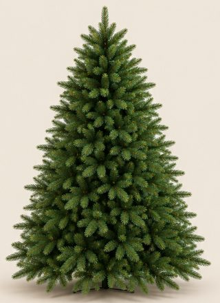
179,95 €Voir sur Amazon -
Cache-pied de sapin doré ajouré, 70 cm
Métal doré à motif losange, se pose autour du pied du sapin.
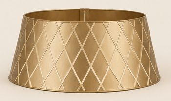
32,99 €Voir sur Amazon -
Boules de Noël blanc, champagne et doré (lot de 100)
Boules incassables de plusieurs tailles et finitions.
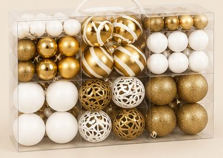
19,99 €Voir sur Amazon -
Nœuds en velours bordeaux (lot de 12)
Grands nœuds de 13 × 26 cm à longues queues, avec attaches, pour le sapin, la rampe et la couronne. Prévoir 2 lots pour recréer l'image.
-
Guirlande lumineuse micro-LED fil cuivre 20 m
Blanc chaud, télécommande, 8 modes. Dans le sapin et les guirlandes de sapin.
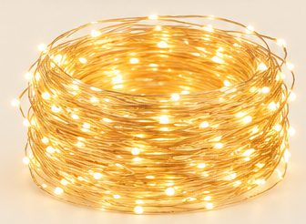
16,99 €Voir sur Amazon -
Guirlande de sapin givrée 2,7 m
Baies rouges et pommes de pin. L'image en montre 3 (rampe, console, bord gauche).
24,99 €Voir sur Amazon -
Couronne de Noël lumineuse 60 cm
Givrée, avec LED blanc chaud. Le nœud bordeaux vient de l'article 4.
36,90 €Voir sur Amazon -
Boîtes cadeaux lumineuses (lot de 3)
3 tailles, 140 LED blanc chaud.
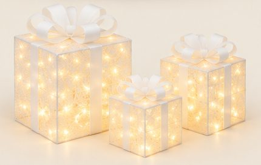
45,99 €Voir sur Amazon -
Photophores dorés à cloche en verre (lot de 2)
Un grand et un petit, pour bougies pilier (bougies de l'article 10).
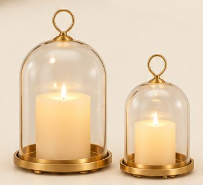
38,98 €Voir sur Amazon -
Bougies LED effet cire (lot de 9)
Flamme vacillante, télécommande et minuteur. L'image en montre une douzaine : compte 2 lots.
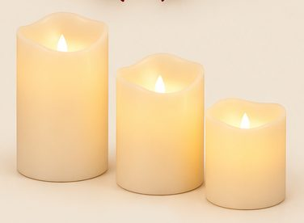
23,99 €Voir sur Amazon -
Console d'entrée blanche à 2 tiroirs
Plateau effet bois clair, étagère basse.
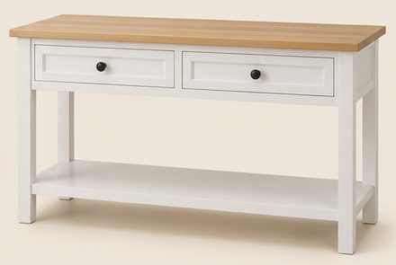
103,99 €Voir sur Amazon -
Miroir mural en arche doré 120 × 80 cm
Cadre doré très fin. Sur l'image, il est fixé au mur au-dessus de la console.
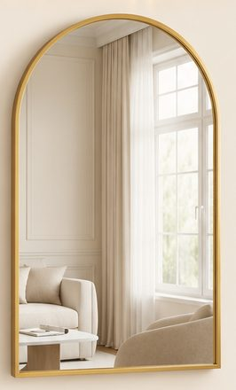
88,00 €Voir sur Amazon -
Lustre linéaire doré à globes en verre
Laiton doré, globes en verre transparent, ampoules non fournies.
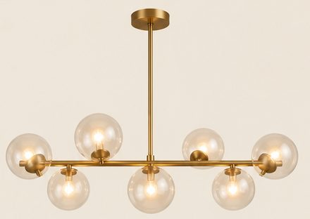
203,99 €Voir sur Amazon -
Tapis de couloir crème à poils longs, 80 × 300 cm
Doux et épais, lavable.
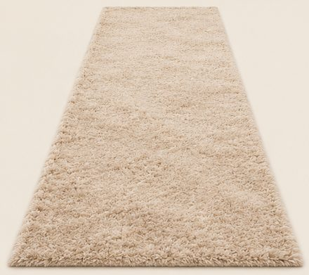
76,90 €Voir sur Amazon -
Branches de pin enneigées et vase blanc à côtes
Branches givrées (lot de 20) dans un vase à côtes de 20 cm. L'image montre 2 bouquets.
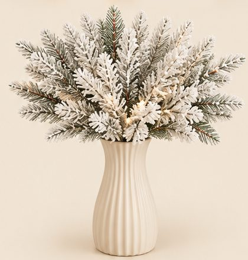
-
Lampe champignon en métal doré, 50 cm
Laiton brossé, lumière douce.
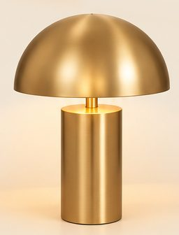
67,98 €Voir sur Amazon -
Ruban LED COB blanc chaud 5 m
Ligne de lumière continue sous les marches et sous la console. Il faut plusieurs rouleaux pour l'escalier.
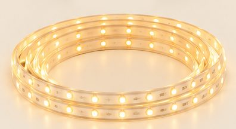
29,99 €Voir sur Amazon
Enregistrer ce look sur Pinterest
Image d'inspiration générée par IA. Les prix sont indicatifs et peuvent changer sur Amazon.